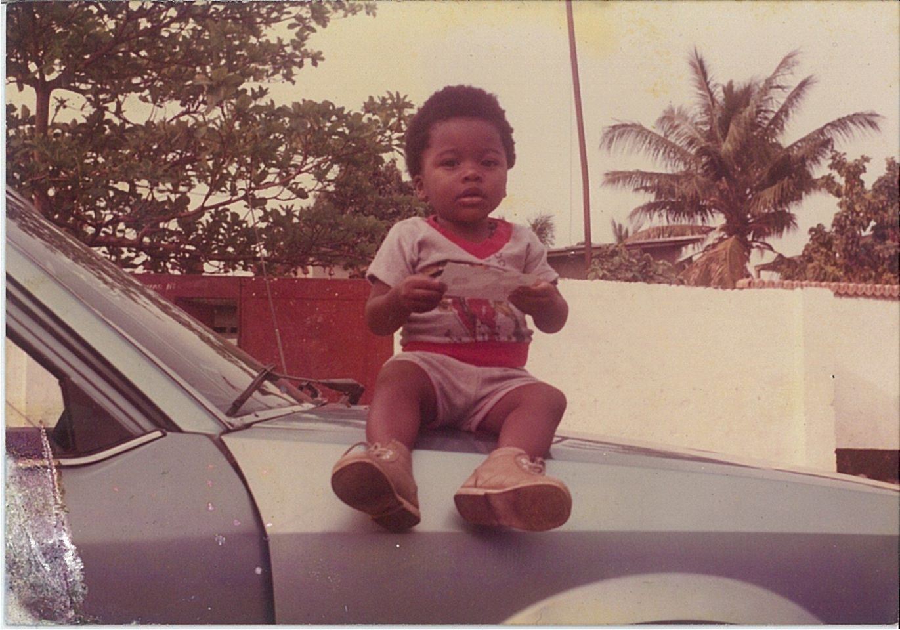

He was born to a Congolese father, the musician and Congo-Kinshasa political figure Tabu Ley Rochereau and a Senegalese mother.
After spending his childhood in Congo-Kinshasa, at the age of 10, he moved to France to live with relatives in Beziers, then Osny,
Cergy and Sartrouville.
He finished his French baccaleureat at Académie de Versailles with high grades and continued with Cultural Mediation,
Communication at Roanne and La Guillotière. After obtaining his master's degree, he dedicated himself to music.
His first album Frères Lumières was a trio with two other friends. They released a maxi single.
He was also involved in many musical projects including the album Tendance by the band Bana Kin (with Sinistre Kozi Philo and Mic genie). His own street DVD was released at end of 2005 as Eternel Recommencement followed in 2006 and was signed to Hostile record label. After working with a number of renowned rappers, he released his debut studio album in March 2007 titled À chaque frère ("To Every Brother") containing collaborations from Diam's, Kool Shen, S'Pi and Mike Génie. His second album came out in October 2009 called Sur les chemins du retour ("On the Ways of Return"), alongside an international tour. In preparation of his third album, he also released a downloadable Digi-tape En noir et blanc - En attendant Noir Désir ("Black & White, Waiting for Black Desire") where he included some remixes of the album. In January 2012, he released his third studio album Noir désir ("Black Desire") featuring Taipan, Corneille, S-Pi, Sam's, Indila, LFDV and his own father Tabu Ley Rochereau"
Visit my facebook page for more information or click here to watch some of my music